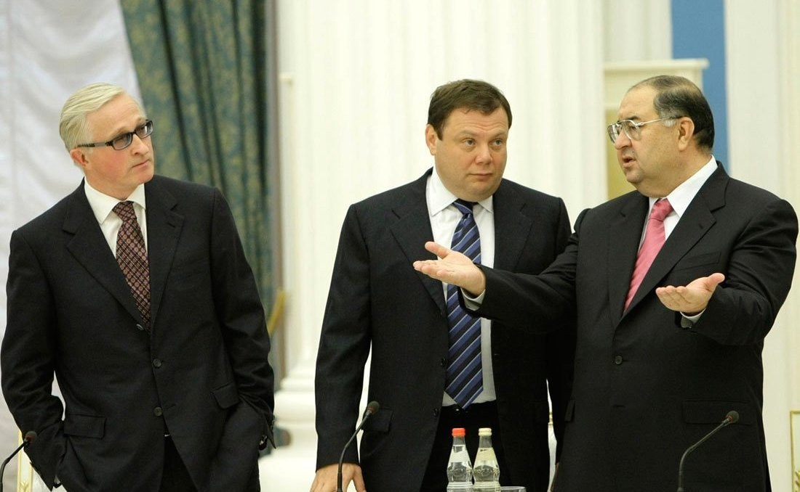

ЕС исключил Усманова и Фридмана из санкционного списка, вызвав гнев Украины
22 сентября ЕС исключил родившегося в Чусте миллиардера Алишера Усманова и сооснователя «Альфа-Групп» Михаила Фридмана, продлив меры против около 3000 других.

22 сентября 2026 года представители стран ЕС согласовали исключение Алишера Усманова и Михаила Фридмана из санкционного списка ЕС по России, продлив при этом меры против оставшихся ~3000 лиц и организаций. Оба находились под санкциями с вторжения России в 2022 году.
Что это за решение
Это политическое решение, связанное с продлением санкционного режима, а не судебный вердикт. По данным Euronews и The Moscow Times, за исключение Усманова выступала Франция (ссылаясь на нацбезопасность), за Фридмана — Люксембург. Латвия, последний несогласный, приняла «конструктивное воздержание», что позволило принять решение единогласно. Режим продлён на 36 месяцев.
Узбекские корни
Алишер Усманов родился 9 сентября 1953 года в Чусте, Наманганская область, Узбекистан, детство в основном провёл в Ташкенте. По данным Forbes 2026, его состояние превышает $14 млрд (Euronews приводит $16,6 млрд). Фридман — сооснователь крупного российского конгломерата «Альфа-Групп»; он подал иск на $16 млрд против Люксембурга.
Реакция Украины
Киев отреагировал с гневом. Президент Владимир Зеленский призвал страны ЕС сохранить обоих в списке и назвал исключение отдельных олигархов «контрпродуктивным».
Решение об исключении Усманова и Фридмана из санкционного списка — постыдное и необоснованное.
— Андрей Сибига, министр иностранных дел Украины (22 сентября 2026, Укринформ)
Кратко
- Дата: 22 сентября 2026, на уровне Совета ЕС
- Исключены: Алишер Усманов, Михаил Фридман
- Остаются в списке: ~3000 лиц/организаций
- Под санкциями с: 2022 года (начало войны)
- Поддержали: Франция (Усманов), Люксембург (Фридман); Латвия воздержалась
- Усманов: родился в Чусте, Наманган; состояние $14 млрд+ (Forbes 2026)